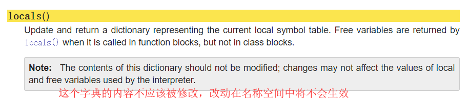

原文出处:本文由博客园博主suwanbin提供。
原文连接:https://www.cnblogs.com/suwanbin/p/11240814.html
原文连接:https://www.cnblogs.com/suwanbin/p/11240814.html
面向对象（OOP）基本概念
前言


话说三国时期曹军于官渡大败袁绍,酒席之间,曹操诗兴大发,吟道:喝酒唱歌,人生真爽! 众将直呼:"丞相好诗",于是命印刷工匠刻板印刷以流传天下;
待工匠刻板完成,交与曹操一看,曹操感觉不妥,说道:"喝酒唱歌,此话太俗,应改为'对酒当歌'较好",于是名工匠重新刻板,当时还没有出现活字印刷术,如果样板要改,只能重新刻板,工匠眼看连夜刻版之工，彻底白费，心中叫苦不迭。可也只得照办。
版样再次出来请曹操过目，曹操细细一品，觉得还是不好，说”人生真爽太过直接，应该改问语才够意境，因此应改为‘对酒当歌，人生几何？’“，于是....
在活字印刷术还没出现之前，如果版样有改动，只能重新雕刻。而且在印刷完成后，这个样板就失去了它的价值，如果需要其他样板只能重新雕刻。而活字印刷术的出现就大大改善了印刷技术。如上例”喝酒唱歌，人生真爽“，如果用活字印刷，只需要改四个字就可，其余工作都未白做。岂不快哉!!
活字印刷也反应了OOP。当要改动时，只需要修改部分，此为 可维护；当这些字用完后，并非就完全没有价值了，它完全可以在后来的印刷中重复使用，此乃 可复用；此诗若要加字，只需另刻字加入即可，这就是 可扩展；字的排列可以横排，也可以竖排，此是 灵活性好。# 上述案列反应了面向对象的优点,即可维护性高,扩展性强,复用性高!
# 这些特点非常适用于用户需求变化频繁的互联网应用程序,这是学习面向对象的重要原因
# 但是面向对象设计的程序需涉及类与对象,相应的复杂度会提高!
#
# 并非所有程序都需要较高的扩展性,例如系统内核,一旦编写完成,基本不会再修改,使用面向过程来设计则更适用面向对象
面向对象： # 是一种编程思想，是前辈们总结的编程经验，指导程序员如何编写出更好的程序
核心： # 对象
程序就是一系列对象的集合，程序员负责调度控制这些对象来交互着完成任务 在面向对象中程序员的角度发生了改变，从具体的操作者变成了指挥者。
强调：对象不是凭空产生的，需要我们自己设计
面向对象的优缺点
'''
优点：
1.可扩展性高
2.灵活性高
3.重用性高
缺点：
1.程序的复杂度提高了
2.无法准确预知结果
'''使用场景： # 对扩展性要求较高的程序，通常是直接面向用户的，例如qq 微信
注意点： # 不是所有的程序都要采用面向对象，要根据实际需求来选择
面向对象的两大核心： # 类与对象
类
'''
类即类型、类别，是一种 抽象概念
是一系列具备相同特征和相同行为的对象的集合
''' 对象
'''
对象就是具体存在的某个事物，具备自己的特征和行为
对象就是特征和技能的结合体
'''类和对象的关系
'''
类包含一系列对象
对象属于某个类
在现实中先有对象再有类，程序中先有类再有对象
我们必须先告诉计算机这类的对象有什么特征有什么行为
'''结论： # 在面向对象编程时，第一步需要考虑需要什么样的对象，对象具备什么样的特征和行为，从而根据这些信息总结出需要的类
用面向对象思想编程
类的定义语法及类名书写规范
class 类的名称:
# 类中的内容，描述属性和技能
# 描述属性用变量
# 描述行为用函数
'''
类名书写规范：
1.见名知意
2.名称是大驼峰式（驼峰就是单词首字母大写，大驼峰就是第一个字母大写，小驼峰是第一个字母小写）
3.其他规范与变量大致相同
'''属性
'''
属性可以写在类中
类中的属性，是对象公共的
也可以写在对象中
对象中的属性，每个对象独特的（不一样的）
如果类和对象中存在同样的属性，先访问对象，如果没有再访问类
'''属性的增删改查
'''
增加属性
对象变量名称.属性名称 = 属性值
egon.male = 'male'
删除属性
del 对象的变量名称.属性名称
del egon.male
修改属性
对象.属性 = 新的值
查看所有属性，访问的是对象的所有属性
对象.__dict__ --> dict 可以访问调用者自身的名称空间
访问他的类
对象.__class__ 返回类
'''class Student:
'''
这是Student类的注释
'''
def __init__(self, name):
self.name = name
class TeachOfOldBoy:
company = 'oldboy'
def __init__(self, name):
self.name = name
# ---------- 对象新增、修改、查看、删除属性 -------------
xuzhaolong = Student('xzl')
print(xuzhaolong.name) # 对象.属性 --> 访问对象的属性
# xzl
# print(xuzhaolong.age) # 访问不存在的属性会报错'Student' object has no attribute 'age'
xuzhaolong.age = 18 # 对象.属性 = 值 --> 为对象添加新属性
print(xuzhaolong.age)
# 18
xuzhaolong.age = 28 # 对象.属性 = 新值 --> 修改属性的值（如果该对象已有此属性）
print(xuzhaolong.age)
# 28
del xuzhaolong.age # 删除对象的属性
# print(xuzhaolong.age) # 会报错，属性已被删除，类中（属性的查找顺序：对象-->父类-->...如果还有父类，其他父类...-->Object）没有这个属性，AttributeError: 'Student' object has no attribute 'age'
print(TeachOfOldBoy.__dict__) # __dict__查看调用者的名称空间里的名字
# {'__module__': '__main__', 'company': 'oldboy', '__init__': <function TeachOfOldBoy.__init__ at 0x0000026D1AC8A9D8>, '__dict__': <attribute '__dict__' of 'TeachOfOldBoy' objects>, '__weakref__': <attribute '__weakref__' of 'TeachOfOldBoy' objects>, '__doc__': None}
print(xuzhaolong.__dict__)
# {'name': 'xzl', 'age': 28}
# ---------- __class__ 查看调用者所属类型（python里类也是一种数据类型） -------------
print(TeachOfOldBoy.__class__) # __class__ 查看调用者所属类
# <class 'type'>
print(xuzhaolong.__class__)
# <class '__main__.Student'>
# ---------- __doc__ 查看调用者的注释 -------------
print(TeachOfOldBoy.__doc__) # __doc__ 查看调用者的注释
# None
print(Student.__doc__) # __doc__ 查看调用者所属类的注释
#
# 这是Student类的注释
#
print(xuzhaolong.__doc__) # __doc__ 查看调用者所属类的注释
#
# 这是Student类的注释
#
# ------------ 类中的属性与对象 -----------------
egon = TeachOfOldBoy('egon')
print(egon.company)
# oldboy
egon.company = 'OldBoy'
print(egon.company) # 修改对象的继承的属性不影响类中的属性
# OldBoy
print(TeachOfOldBoy.company)
# oldboy属性的查找顺序： # 属性的查找顺序：先找自己的，再找类的，再父类。。。。一直往上找到object，再没有就报错
对象初始化__inint__
'''
__init__方法
特点
1.当实例化对象时，会自动执行__init__方法
2.会自动将对象作为第一个参数传入，对象参数名称为self，self这个名字可以改，但不建议（一眼就知道是对象本身了）
功能
用户给对象赋初始值
'''
# 初始化，不仅仅只是赋初值，还可以做一些其他操作，来保证对象的正常生成'''
之前十个老师，每个老师都要输姓名年龄等，而属性的值又不一样，就不能直接定义成类的属性
每定义一个对象都要写一次，很麻烦
那么我们可以使用函数来简化这个赋值操作
class Cls: # 定义一个类
pass
def init(obj, kind, color, age): # 定义一个方法来简化给对象添加（定制）属性
obj.kind = kind # 即 对象.属性 = 值（变量的） --> 像什么？ 给对象添加属性嘛
obj.color = color
obj.age = age
obj1 = Cls() # 实例化出一个对象
init(obj1, "泰日天", '棕色', 2) # 通过调用 init 函数来给该对象添加属性
obj2 = Cls()
init(obj2, "拆家犬", '黑白', 1)
# 这样子就有了两个对象，且都已经有了各自的属性了
'''
class Dog:
def __init__(self, kind, color, age):
# print(locals()) # {'age': 2, 'color': '棕色', 'kind': '泰日天', 'self': <__main__.Dog object at 0x000002985BE586D8>}
self.kind = kind
self.color = color
self.age = age
# __init__ 函数不允许写返回值（不能写，只能返回None，写return None 没有意思） 规定如此
'''
不过在类里面直接写这个 init 函数会更方便（python内部做了一些处理）
如上，当实例化对象时，会自动执行这个 __init__ 方法
会自动将调用这个类实例化的对象作为第一个参数传入，对象参数名称为self
'''
# 那么在实例化的时候就可以简写成这样了，四行变两行
teidi = Dog("泰日天", '棕色', 2)
# print(teidi.__dict__) # {'kind': '泰日天', 'color': '棕色', 'age': 2}
erha = Dog("拆家犬", '黑白', 1)
'''
其实上面的写法还可以有优化，那个__init__ 函数还可以写得更简洁一点（参数越多越明显）
def __init__(self, kind, color, age):
lcs = locals()
lcs.pop('self')
self.__dict__.update(lcs)
上面写法中的locals()内置函数在 __init__ 函数中，可以获取 __init__ 函数名称空间里的那些名字，它是一个字典
# print(locals()) # {'age': 2, 'color': '棕色', 'kind': '泰日天', 'self': <__main__.Dog object at 0x000002985BE586D8>}
我们将其赋给一个中间字典接收，将多余的 self 键值对去掉，就是我们对象想要的属性
而对象.__dict__正好也是一个字典
# print(teidi.__dict__) # {'kind': '泰日天', 'color': '棕色', 'age': 2}
都是字典？字典的update()方法还记得吗？
将这个中间字典update()到对象的.__dict__ 中，即完成了对象的属性添加
self.__dict__.update(lcs)
'''
备注：关于python内一些 __名字__ 这种属性是什么情况，可以参考这篇博客哦（都说不重要，但总有我这样的好奇宝宝嘛）~ Python常用内建方法：__init__,__new__,__class__的使用详解
绑定方法与非绑定方法
对象的精髓所在就是将数据和处理数据的函数整合到一起了,这样一来，拿到一个对象就同时拿到了需要处理的数据以及处理数据的函数
'''
******* 这一块基础概念是重点 *******
对象绑定方法：self --> 默认传入对象
默认情况下，类中的方法都是对象绑定方法
当使用对象调用时
其特殊之处在于调用该函数时会自动传入对象本身作为第一个参数
当使用类名来调用时就是一个普通函数，有几个参数就传几个参数
类绑定方法：@classmethod
cls(加上@classmethod装饰后自己将self改为cls(class是关键字)) --> 默认传入类
给类的抽象方法，默认传入类作为参数
特殊之处：不管用类还是对象调用，都会自动传入类本身，作为第一个参数
何时绑定给对象：当函数逻辑需要访问对象中的数据时
何时绑定给类：当函数逻辑需要访问类中的数据时
非绑定方法：@staticmethod
装饰成普通函数，不管谁调都一样
既不需要访问类的数据也不需要访问对象的数据
定义时有几个参数调用时就需要传入几个参数
'''
class Dog:
species = 'dog'
# 初始化方法 __init__ 也属于对象绑定方法
def __init__(self, kind, nickname, skill):
self.kind = kind
self.nickname = nickname
self.skill = skill
# 这就属于一个对象绑定方法，默认将对象作为第一个参数传入（调用的时候不需要手动传入）
def introduce(self):
print(f"我是{self.kind}，我能{self.skill}，人送外号{self.nickname}")
# 类绑定方法
@classmethod
def tell_species(cls): # 先写装饰器再写函数，默认参数就是cls了，写完函数再装饰的话，记得把self换成cls，表示参数是一个类
print(f"我的物种是{cls.species}")
# 非绑定方法（既不需要传入类，也不需要传入对象）
@staticmethod
def normal_func(arg1, arg2):
print(f"参数一：{arg1} 参数二：{arg2}，这只是一个普通方法啦~")
taidi = Dog('泰迪', '泰日天', '日天')
erha = Dog('二哈', '拆家犬', '拆家')
# --------绑定对象方法的调用
taidi.introduce()
erha.introduce()
# 我是泰迪，我能日天，人送外号泰日天
# 我是二哈，我能拆家，人送外号拆家犬
Dog.introduce(erha) # 类调用对象的方法要手动把对象传入进去
# 我是二哈，我能拆家，人送外号拆家犬
# --------类绑定方法调用
Dog.tell_species()
taidi.tell_species() # 可以直接调用，无需手动传入 class
# 我的物种是dog
# 我的物种是dog
# --------非绑定方法调用
Dog.normal_func(1, 2) # 非绑定方法，定义时有几个参数，调用时就要传几个参数
taidi.normal_func(1, 2) # 非绑定方法，定义时有几个参数，调用时就要传几个参数
# 参数一：1 参数二：2，这只是一个普通方法啦~
# 参数一：1 参数二：2，这只是一个普通方法啦~利用pickle模块将对象序列化到本地
如单机游戏的存档（把对象的数据等信息存储到文件中，下次启动再读取回来） --> 游戏扩展
import pickle
class Student:
def __init__(self, name):
self.name = name
def say_hi(self):
print("name:", self.name)
def save(self):
with open(self.name, "wb") as f: # pickle 模块操作文件必须是b 模式
pickle.dump(self, f) # 利用pickle 模块，将传入的对象序列化到了文件中（json模块不支持对象这种类型）
@staticmethod
def get(name):
with open(name, "rb") as f:
obj = pickle.load(f) # 利用pickle 模块，将文件中的对象反序列化成python中的对象
return obj
# 将rose 和 jack两个从内存中对象序列化到文件中
stu = Student("rose")
stu.save()
stu2 = Student("jack")
stu2.save()
# 将他两反序列化出来到内存中
obj = Student.get("rose") # 调用类中的方法（类绑定方法）从文件中将对象加载到内存中
print(obj.name) # 使用该对象获取属性值
# rose
obj2 = Student.get("jack")
print(obj2.name)
# jack
print(Student.__name__) # 获取类名
# Student
# 反序列化出来的对象和序列化的那个对象已经不是同一个对象了
print(id(stu), id(obj))
# 2161209937816 2161209971880
print(stu.name, obj.name)
# rose rose
print(id(stu2), id(obj2))
# 2161209937872 2161209971824
print(stu2.name, obj2.name)
# jack jack
obj2.name = 'jack2'
print(stu2.name, obj2.name)
# jack jack2英雄大乱斗（随机）案例
import random
import time
class Hero:
def __init__(self, name, health, attack, q_hurt, w_hurt, e_hurt):
lcs = locals()
lcs.pop('self')
self.__dict__.update(lcs)
def attack(self, enemy):
print(f"-- {self.name} --使用普通攻击攻击了-- {enemy.name} --,造成了 {self.attack} 点伤害，{enemy.name} 剩余 {enemy.health} 点生命值。\033[0m")
enemy.health -= self.attack
def Q(self, enemy):
print(f"\033[0m-- {self.name} --使用Q技能攻击了-- {enemy.name} --,造成了 {self.q_hurt} 点伤害，{enemy.name} 剩余 {enemy.health} 点生命值。\033[0m")
enemy.health -= self.q_hurt
def W(self, enemy):
print(f"\033[32m-- {self.name} --使用W技能攻击了-- {enemy.name} --,造成了 {self.w_hurt} 点伤害，{enemy.name} 剩余 {enemy.health} 点生命值。\033[0m")
enemy.health -= self.w_hurt
def E(self, enemy):
print(f"\033[35m-- {self.name} --使用E技能攻击了-- {enemy.name} --,造成了 {self.e_hurt} 点伤害，{enemy.name} 剩余 {enemy.health} 点生命值。\033[0m")
enemy.health -= self.e_hurt
def check_hero(enemy, team):
if enemy.health <= 0:
print(f"\033[31m** {enemy.name} ** 阵亡。\033[0m")
if team == 'blue':
blue_team.remove(enemy)
elif team == 'red':
red_team.remove(enemy)
def get_random_skill():
return skill_list.get(random.randint(1, 4))
def get_random_blue_hero():
return blue_team[random.randint(0, len(blue_team) - 1)]
def get_random_red_hero():
return red_team[random.randint(0, len(red_team) - 1)]
blue_team = [
Hero('瑞文', 465, 65, 30, 25, 70),
Hero('提莫', 300, 35, 50, 40, 60),
]
red_team = [
Hero('李白', 320, 60, 35, 29, 77),
Hero('鲁班', 280, 79, 35, 40, 80),
]
skill_list = {
1: Hero.attack,
2: Hero.Q,
3: Hero.W,
4: Hero.E,
}
while len(red_team) > 0 and len(blue_team) > 0:
skill = get_random_skill()
blue = get_random_blue_hero()
red = get_random_red_hero()
flag = random.randint(0, 1)
if flag:
skill(blue, red)
check_hero(red, 'red')
else:
skill(red, blue)
check_hero(blue, 'blue')
time.sleep(0.3)
if len(red_team) == 0:
print(f"蓝色方获胜！")
print(f"蓝色方所剩英雄状态为：")
for hero in blue_team:
print(f"{hero.name} 剩余生命值 {hero.health}")
elif len(blue_team) == 0:
print(f"红色方获胜！")
print(f"红色方所剩英雄状态为：")
for hero in red_team:
print(f"{hero.name} 剩余生命值 {hero.health}")注释版
import random
import time
# 定义一个英雄类，表示英雄这一类的共同特征
class Hero:
def __init__(self, name, health, attack, q_hurt, w_hurt, e_hurt):
lcs = locals()
lcs.pop('self')
self.__dict__.update(lcs)
'''
********************************** 上述代码讲解 *************************************
# 每次调用类生成对象的时候都会执行这里面的代码，并将对象作为第一个参数self 传进来
print(locals())
# {'e_hurt': 70, 'w_hurt': 25, 'q_hurt': 30, 'attack': 65, 'health': 465, 'name': '瑞文', 'self': <__main__.Hero object at 0x000002371823B278>}
lcs = locals() # 这个locals()在 __init__ 函数里 可以获取 __init__ 函数名称空间里的那些名字，他是一个字典
lcs.pop('self') # 发现上面的 locals() 多了一个 self 是不需要的，那就把它删掉
print(lcs)
# {'e_hurt': 70, 'w_hurt': 25, 'q_hurt': 30, 'attack': 65, 'health': 465, 'name': '瑞文'}
# 这些内容正是初始化对象时想做的事（只不过是 对象.e_hurt = 70 这样的形式而已）
self.__dict__.update(lcs) # 将这些东西放到对象里，就重复了n变 self.参数 = 参数 （self.name = name）这样的动作
print(self.__dict__)
# {'e_hurt': 70, 'w_hurt': 25, 'q_hurt': 30, 'attack': 65, 'health': 465, 'name': '瑞文'}
最初始的写法：
self.name = name
self.health = health
self.attack = attack
self.q_hurt = q_hurt
self.w_hurt = w_hurt
self.e_hurt = e_hurt
'''
def attack(self, enemy):
enemy.health -= self.attack
print(f"-- {self.name} --使用普通攻击攻击了-- {enemy.name} --,造成了 {self.attack} 点伤害，{enemy.name} 剩余 {enemy.health} 点生命值。\033[0m")
def Q(self, enemy):
enemy.health -= self.q_hurt
print(f"\033[0m-- {self.name} --使用Q技能攻击了-- {enemy.name} --,造成了 {self.q_hurt} 点伤害，{enemy.name} 剩余 {enemy.health} 点生命值。\033[0m")
def W(self, enemy):
enemy.health -= self.w_hurt
print(f"\033[32m-- {self.name} --使用W技能攻击了-- {enemy.name} --,造成了 {self.w_hurt} 点伤害，{enemy.name} 剩余 {enemy.health} 点生命值。\033[0m")
def E(self, enemy):
enemy.health -= self.e_hurt
print(f"\033[35m-- {self.name} --使用E技能攻击了-- {enemy.name} --,造成了 {self.e_hurt} 点伤害，{enemy.name} 剩余 {enemy.health} 点生命值。\033[0m")
def check_hero(enemy, team):
if enemy.health <= 0:
# \033[31m 这种格式的是打印时的颜色控制（颜色可参考 https://www.cnblogs.com/easypython/p/9084426.html）
print(f"\033[31m** {enemy.name} ** 阵亡。\033[0m")
if team == 'blue':
blue_team.remove(enemy)
elif team == 'red':
red_team.remove(enemy)
# 随机选择一种攻击方式
def get_random_skill():
# random_index = random.randint(1, 4)
# random_skill = skill_list.get(random_index)
# return random_skill # 函数名当做返回值返回，拿到可以直接加括号调用执行函数
return skill_list.get(random.randint(1, 4)) # 上面代码的简便写法
# 随机选择一个蓝色方英雄
def get_random_blue_hero():
# 返回 blue_team 这个列表的索引为 random.randint(0, len(blue_team) - 1) 返回值的元素（英雄对象）
# return blue_team[random.randint(0, len(blue_team) - 1)] # 下面几行的简便写法
random_idndex = random.randint(0, len(blue_team) - 1)
hero = blue_team[random_idndex]
return hero
# 随机选择一个红色方英雄
def get_random_red_hero():
return red_team[random.randint(0, len(red_team) - 1)]
# 蓝色方英雄阵容 --- 可自定义 ---
# 方便随机数取英雄对象
blue_team = [
# 英雄名 生命值 普通攻击力 Q技能伤害 W技能伤害 E技能伤害
# 瑞文 465 65 30 25 70
Hero('瑞文', 465, 65, 30, 25, 70),
Hero('提莫', 300, 35, 50, 40, 60),
Hero('锤石', 600, 15, 20, 0, 32),
]
# 红色方英雄阵容 --- 可自定义 ---
# 方便随机数取英雄对象
red_team = [
Hero('李白', 320, 60, 35, 29, 77),
Hero('鲁班', 280, 79, 35, 40, 80),
Hero('盾山', 800, 3, 3, 3, 3),
]
# 技能数字对应表（方便根据随机数取技能）
skill_list = {
1: Hero.attack,
2: Hero.Q,
3: Hero.W,
4: Hero.E,
}
def run():
while len(red_team) > 0 and len(blue_team) > 0:
# 调用方法随机获得一个技能
skill = get_random_skill()
# 调用方法随机获得一个蓝色方英雄
blue = get_random_blue_hero()
# 调用方法随机获得一个红色方英雄
red = get_random_red_hero()
# 随机选择一方为攻击方（那么另一方就是被攻击方）
flag = random.randint(0, 1)
if flag:
skill(blue, red)
check_hero(red, 'red')
else:
skill(red, blue)
check_hero(blue, 'blue')
# 暂停0.3秒，可以慢慢看战斗过程
time.sleep(0.3)
# 如果有任意一方没有英雄了，即游戏结束
if len(red_team) == 0:
print(f"蓝色方获胜！")
print(f"蓝色方所剩英雄状态为：")
for hero in blue_team:
print(f"{hero.name} 剩余生命值 {hero.health}")
elif len(blue_team) == 0:
print(f"红色方获胜！")
print(f"红色方所剩英雄状态为：")
for hero in red_team:
print(f"{hero.name} 剩余生命值 {hero.health}")
if __name__ == '__main__':
run()
'''
战斗记录
************************** 省略n多中间战斗步骤 *********************************
-- 锤石 --使用W技能攻击了-- 盾山 --,造成了 0 点伤害，盾山 剩余 42 点生命值。
-- 盾山 --使用E技能攻击了-- 瑞文 --,造成了 3 点伤害，瑞文 剩余 289 点生命值。
-- 瑞文 --使用E技能攻击了-- 盾山 --,造成了 70 点伤害，盾山 剩余 -28 点生命值。
** 盾山 ** 阵亡。
蓝色方获胜！
蓝色方所剩英雄状态为：
瑞文 剩余生命值 289
锤石 剩余生命值 235
战斗记录2
************************** 省略n多中间战斗步骤 *********************************
-- 盾山 --使用普通攻击攻击了-- 锤石 --,造成了 3 点伤害，锤石 剩余 11 点生命值。
-- 锤石 --使用普通攻击攻击了-- 盾山 --,造成了 15 点伤害，盾山 剩余 288 点生命值。
-- 盾山 --使用E技能攻击了-- 瑞文 --,造成了 3 点伤害，瑞文 剩余 -1 点生命值。
** 瑞文 ** 阵亡。
-- 盾山 --使用普通攻击攻击了-- 锤石 --,造成了 3 点伤害，锤石 剩余 8 点生命值。
-- 盾山 --使用普通攻击攻击了-- 锤石 --,造成了 3 点伤害，锤石 剩余 5 点生命值。
-- 盾山 --使用W技能攻击了-- 锤石 --,造成了 3 点伤害，锤石 剩余 2 点生命值。
-- 盾山 --使用Q技能攻击了-- 锤石 --,造成了 3 点伤害，锤石 剩余 -1 点生命值。
** 锤石 ** 阵亡。
红色方获胜！
红色方所剩英雄状态为：
盾山 剩余生命值 288
'''
'''
有红蓝两方英雄（可自定义个数）
随机一方英雄使用随机攻击方式攻击另一方英雄，任意一方英雄全部阵亡则游戏结束
每个英雄有 名字、生命值、普通攻击、Q技能攻击、W技能攻击、E技能攻击以及对应的伤害值
当生命值为 0 时阵亡，不再参与战斗
'''后续完善博客思路
调用类生成对象发生的一些事情（对比变量、模块名称空间生成等）
属性的查找顺序（画图表示吧）
先找自己的，再找父类的，一级一级往上找，直到基类object，再没有报错
英雄大乱斗案例
序列化、反序列化对象（保存、读取对象）(游戏退出，读档)